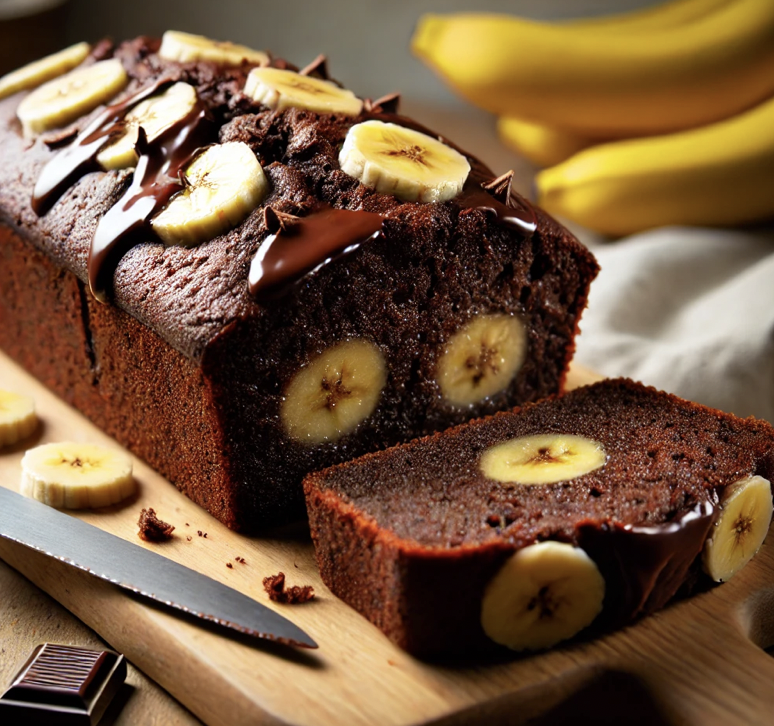

Bananen Schoko Kuchen

Beschreibung
Resteverwertung trifft auf Genuss.
Zutaten
- 3 reife Bananen
- 2 Eier
- 100 g Zucker
- 100 ml Öl
- 200 g Mehl
- 1 TL Backpulver
- 1 TL Zimt
- 100 g Zartbitterschokolade, gehackt
Schritte
- Bananen zerdrücken, mit Eiern und Zucker verrühren.
- Öl, Mehl, Backpulver, Zimt, Schokolade unterrühren.
- In eine Kastenform füllen.
- Bei 175 °C ca. 50–60 Minuten backen.
Home